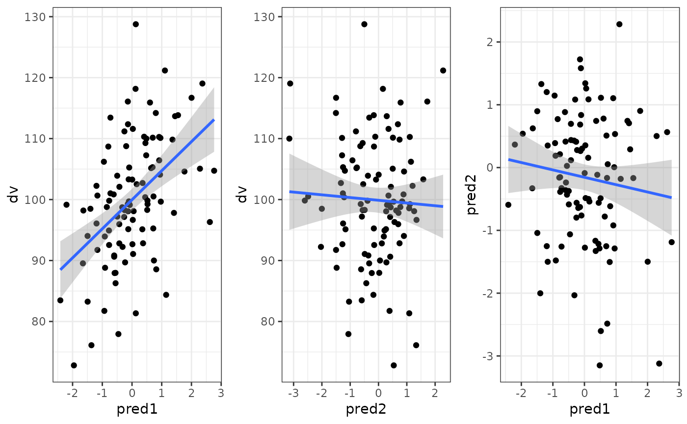

library(faux)
library(dplyr)
library(tidyr)
library(ggplot2)
library(cowplot) # for multi-panel plotsOne continuous predictor
dat <- sim_design(within = list(vars = c("dv", "predictor")),
mu = list(dv = 100, predictor = 0),
sd = list(dv = 10, predictor = 1),
r = 0.5, plot = FALSE)
Between continuous predictors
Here, pred1 is correlated r = 0.5 to the DV, and pred2 is correlated 0.0 to the DV, and pred1 and pred2 are correlated r = -0.2 to each other.
dat <- sim_design(within = list(vars = c("dv", "pred1", "pred2")),
mu = list(dv = 100, pred1 = 0, pred2 = 0),
sd = list(dv = 10, pred1 = 1, pred2 = 1),
r = c(0.5, 0, -0.2), plot = FALSE)
Within continuous predictors
If the continuous predictors are within-subjects (e.g., dv and predictor are measured at pre- an post-test), you can set it up like below.
The correlation matrix can start getting tricky, so I usually map out
the upper right triangle of the correlation matrix separately. Here, the
dv and predictor are correlated 0.0 in the pre-test and 0.5 in the
post-test. The dv is correlated 0.8 between pre- and post-test and the
predictor is correlated 0.3 between pre- and post-test. There is no
correlation between the pre-test predictor and the post-test dv, but I’m
not sure what values are possible then for the correlation between the
post-test predictor and pre-test dv, so I can set that to NA and use the
pos_def_limits function to determine the range of possible
correlations (gven the existing correlation structure). Those range from
-0.08 to 0.88, so I’ll set the value to the mean.
# pre_pred, post_dv, post_pred
r <- c( 0.0, 0.8, NA, # pre_dv
0.0, 0.3, # pre_pred
0.5) # post_dv
lim <- faux::pos_def_limits(r)
r[[3]] <- mean(c(lim$min, lim$max))
dat <- sim_design(within = list(time = c("pre", "post"),
vars = c("dv", "pred")),
mu = list(pre_dv = 100, pre_pred = 0,
post_dv = 110, post_pred = 0.1),
sd = list(pre_dv = 10, pre_pred = 1,
post_dv = 10, post_pred = 1),
r = r, plot = FALSE)You have to make this sort of dataset in wide format and then
manually convert it to long. I prefer gather and
spread, but I’m trying to learn the new pivot functions, so
I’ll use them here.
long_dat <- dat %>%
pivot_longer(cols = -id, names_to = "var", values_to = "value") %>%
separate(var, c("time", "var")) %>%
pivot_wider(names_from = var, values_from = value)One continuous, one categorical predictor
In this design, the DV is 10 higher for group B than group A and the correlation between the predictor and DV is 0.5 for group A and 0.0 for group B.
Add a continuous predictor
If you already have a dataset and want to add a continuous predictor, you can make a new column with a specified mean, SD and correlation to one other column.
First, let’s make a simple dataset with one between-subject factor.
dat <- sim_design(between = list(group = c("A", "B")),
mu = list(A = 100, B = 120), sd = 10, plot = FALSE)Now we can add a continuous predictor with rnorm_pre by
specifying the vector it should be correlated with, the mean, and the
SD. By default, this produces values sampled from a population with that
mean, SD and r. If you set empirical to TRUE, the resulting
vector will have that sample mean, SD and r.
dat$pred <- rnorm_pre(dat$y, 0, 1, 0.5)If you want to set a different mean, SD or r for the between-subject groups, you can split and re-merge the dataset (or use your data wrangling skills to devise a more elegant way using purrr).
A <- filter(dat, group == "A") %>%
mutate(pred = rnorm_pre(y, 0, 1, -0.5))
B <- filter(dat, group == "B") %>%
mutate(pred = rnorm_pre(y, 0, 1, 0.5))
dat <- bind_rows(A, B)You can also specify correlations to more than one vector by setting the first argument to a data frame containing only the continuous columns and r to the correlation with each column.
dat <- sim_design(2, r = 0.5, plot = FALSE)
dat$B <- rnorm_pre(dat[, 2:3], r = c(A1 = 0.5, A2 = 0))
cor(dat[, 2:4])
#> W1a W1b B
#> W1a 1.0000000 0.2736529 0.6455051
#> W1b 0.2736529 1.0000000 0.1352178
#> B 0.6455051 0.1352178 1.0000000Not all correlation patterns are possible, so you’ll get an error message if the correlations you ask for are impossible.